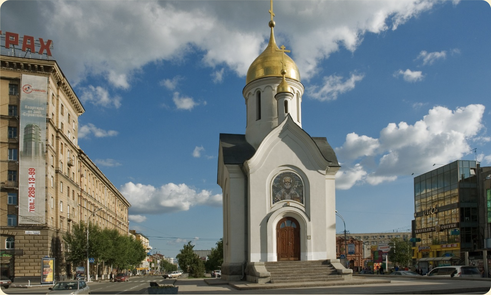
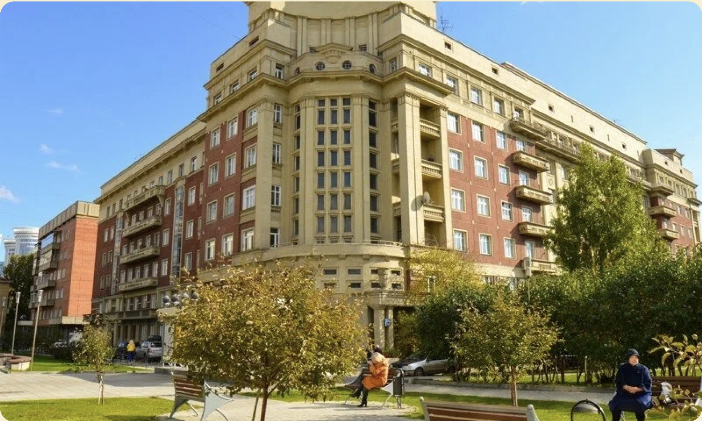
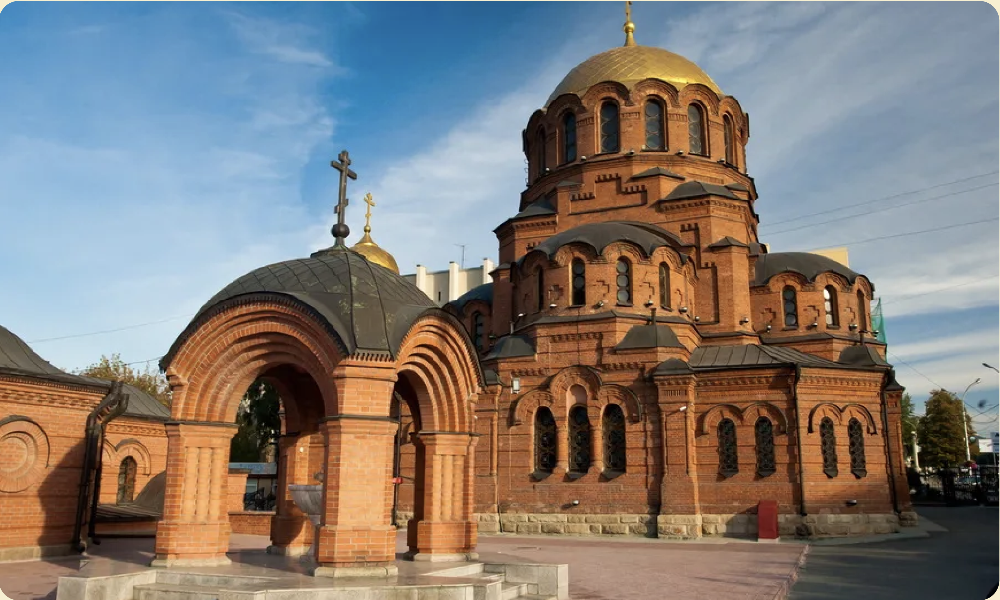

Исследование Академгородка
Протяженность: 4 км
Количество лестниц: 2
Особенности:
- Наличие пешеходных зон
- Мало доступных общественных туалетов
- Часть маршрута проходит в лесной местности
Ключевые места

Проспект Академика Лаврентьева
Главная улица, вдоль которой расположены основные институты Сибирского отделения РАН.

Технопарк "Академпарк"
Это комплекс современных зданий необычной формы, соединенных крытыми переходами.

Новосибирский государственный университет
Один из лучших вузов страны, асположенный прямо в лесу.